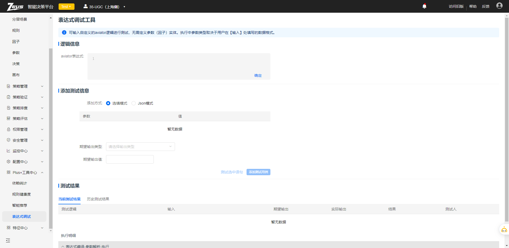
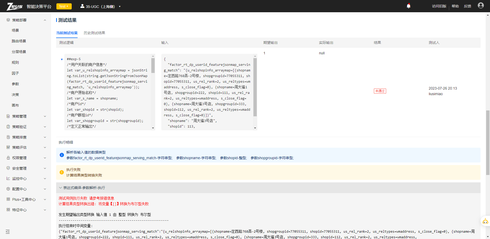

说明：Aviator表达式调试工具
一、背景
当前zeus的Aviator配置过程中存在布控效率低、测试不到位等问题。为提升功能易用性，对于aviator使用相关痛点进行集中解决。
二、操作指南
|
说明
|
图
|
|
【功能入口】
- 直接入口：Plus+工具中心-表达式调试工具
-
跳转入口：
- 因子/规则测试页
- 分层场景表达式框旁
- 画布表达式框旁
[逻辑信息]
-
aviator表达式：输入需要调试的aviator表达式，目前仅支持展示Aviator5的执行明细
- 输入方式：手动自行输入 or 从因子/规则/画布表达式/分层场景表达式跳转带入
- 输入完成后，请一定要点击"确定"按钮完成对表达式的校验，否则无法进行下面的测试用例添加！！
[添加测试信息]
此步前，请先点击aviator表达式输入框右下角的"确定"按钮，完成表达式校验
- 添加方式/期望输出类型/期望输出值：同因子测试逻辑
- 测试选中语句：鼠标可选中上方aviator表达式中某段语句，进行部分调试
[测试结果]
-
分为当前测试结果和历史测试结果：
-
当前测试结果：
- 表格展示测试逻辑、输入、期望输出、实际输出、结果、测试人。可点击左侧蓝色箭头查看全部内容
-
执行明细：
- 蓝色框展示各输入值的数据类型
- 黄色框展示执行结果即具体出错的原因
- 灰色框展示表达式编译、参数解析、执行过程中的执行明细。目前仅支持展示Aviator5的执行明细
|


|
三、FAQ
-
为什么规则/因子测试中测试结果执行没有问题并且测试通过，但在aviator表达式单独调试的时候报错执行错误？
可以看一下调试工具中输入参数类型是否正确。由于调试工具的参数不指定参数类型，系统只能依赖用户输入的类型进行解析无法进行强制转换兜底，例如输入字符串的时候需要两边加引号才能解析，否则系统无法区分字符串和数字。